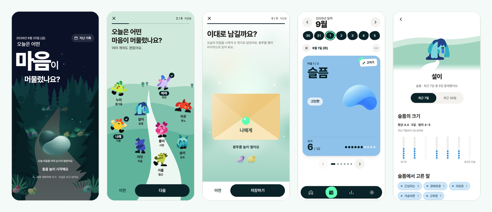
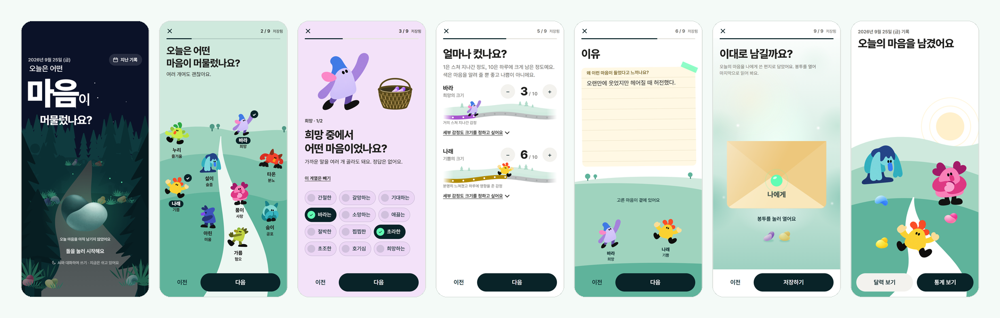
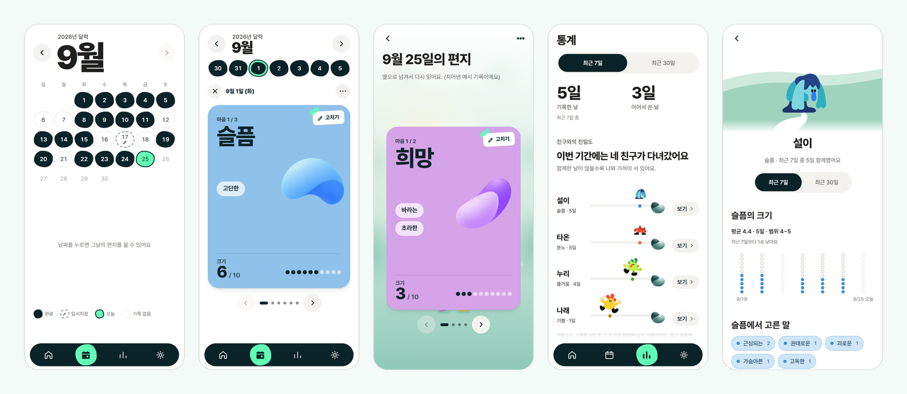
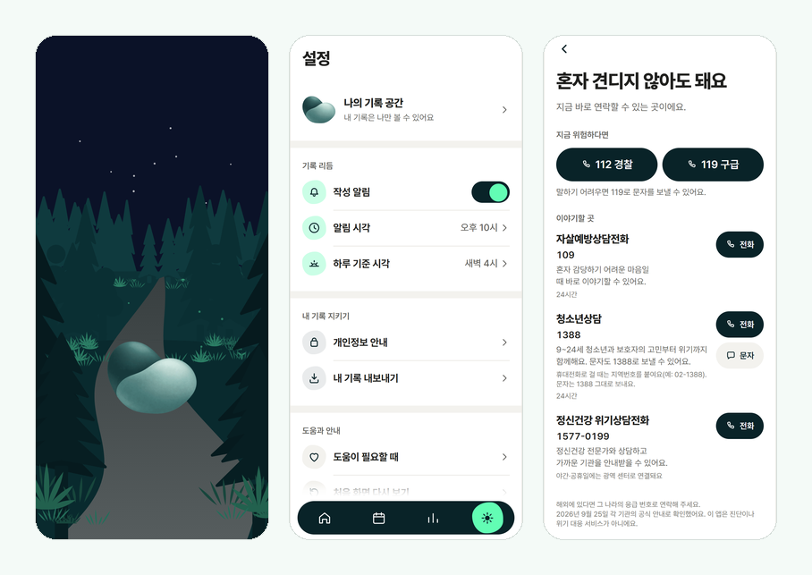
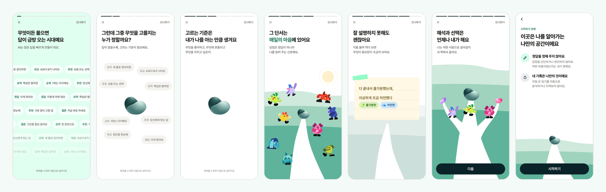

AI가 수많은 답을 만들어 주는 시대에, 매일의 감정을 기록하며 자신을 이해하고 스스로의 기준을 만들어 가도록 돕는 자기이해 기록 앱

아이템의 소개 · 배경
AI 안경을 쓰고 수능 모의 수학 30문항을 푸는 데 걸린 시간. 결과는 1등급이었다(2026년 6월).
교육부는 2027학년도 수능에서 AI 안경을 쓰는 것만으로 부정행위로 처리하기로 했다.
파이낸셜뉴스 2026.11.9. · 경향신문 2026.10.27.
공인회계사 합격자가 수습기관에 등록한 비율.
3년 사이 셋 중 둘이 자리를 못 구하게 됐다.
택스워치 2026.9.21.
2026년 9월, OpenAI가 새 모델을 공개했다.
사람 대신 일을 처리하는 모델이 해마다 새로 나온다.
VentureBeat 2026.9.3.
케냐 소상공인 640명에게 다섯 달 동안 AI 사업 조언자를 준 실험이다. 평균 성과는 달라지지 않았고, 처음부터 성과가 낮던 절반은 오히려 나빠졌다.
두 집단이 AI에게 묻는 것과 받는 답은 비슷했다. 저자들은 여러 조언 가운데 무엇을 골라 실행했는지가 갈랐다고 해석한다.
Otis 외, Management Science, 2026. 매출·이익 기준. 점선은 통계적으로 유의하지 않은 결과.
“지능이 싸고 흔해지면 병목은 이 질문이 된다.
유발 하라리, 2026년 7월 대담 「The next 50 years」
나는 무엇을 원하는가.”
사람에게 남는 것은 무엇을 원하고 무엇을 고를지다. 우리는 그 답을 찾는 연습이 매일의 감정을 알아차리는 데서 시작할 수 있다고 본다. 우리의 가설
아이템의 소개 · 무엇인가
고르고, 크기를 정하고, 내 말로 적는다. 그렇게 남긴 마음이 달력과 편지로 쌓인다.

막대 끝의 글자는 그 계열을 받치는 정서 연구의 근거 등급이다(A가 가장 높다). 근거가 약한 계열도 숨기지 않고 표시했다.
감정 체계 v2, 2026.9. 계열마다 연구 두 편 이상 확인 (Shaver 외 1987, Keltner 외 2019, Panksepp 2010 등)

아이템의 소개 · 지금 단계
근거 등급과 함께 정리한 세부 감정
조사한 감정·일기·심리 서비스
통과한 자동 시험 (2026.10.20.)
통과한 실제 브라우저 시험 (2026.10.20.)

휴대폰 홈 화면에 설치하는 웹앱이다. 서버와 데이터베이스를 직접 만들었고, 지금은 무료 클라우드 한도 안에서 운영한다. 하루에 한 편만 남는다는 규칙은 화면이 아니라 데이터베이스가 지킨다.
| 대표 | 기획, 디자인, 개발 |
| 팀원 | 리서치, 기획, 디자인 |
아이템의 가치 · 풀려는 문제

국무조정실, 2024 청년의 삶 실태조사 (국가승인통계, 15,098명)
질병관리청, 2025 청소년건강행태조사 (54,170명)
이 통계는 부담이 함께 있다는 것을 보여 줄 뿐이다. 원인이 자기이해의 부족이라는 뜻이 아니고, HON은 이 문제를 진단하거나 치료하는 서비스가 아니다.
| 연구가 보여 준 것 | 설계에 반영한 것 |
|---|---|
| 감정에 이름을 붙이면 그 순간의 반응이 줄어든다. Torre & Lieberman, 2018 | 194개 세부 감정에서 가까운 말을 고른다. |
| 자기에 잠겨 묻는 ‘왜’는 괴로움을 키우고, 한 걸음 떨어져 물으면 줄어든다. Kross 외, 2005 · Treynor 외, 2003 | 이유를 묻는 말을 “그 마음은 무엇에서 왔을까요?”로 정하고 “친구의 일기를 읽듯 한 걸음 떨어져 적어 봐요”라는 안내를 붙였다. |
| 문항이 늘면 부담과 빠뜨림이 늘어난다. Eisele 외, 2022 | 칭찬과 감사를 한 화면의 선택 칸으로 합쳤다. 쓰던 글은 자동으로 임시저장된다. |
| 감사 적기는 다른 활동과 견주면 이점이 줄거나 사라진다. Davis 외, 2016 · Cregg & Cheavens, 2021 | 필수로 두지 않았다. 근거가 약한 곳도 그대로 적어 두고 설계에 반영했다. |
아이템의 가치 · 다른 점
AI는 내가 쓴 기록을 바탕으로 정리하고 잇는다. 말은 관찰, 후보, 질문으로만 건넨다. 마지막 해석은 사용자가 한다. 설계 완료 · 구현은 다음 단계
| 이렇게 말하지 않는다 | 이렇게 건넨다 | |
|---|---|---|
| 당신은 외롭습니다. | → | 외로움, 서운함, 소외감 중 가까운 게 있나요? |
| 원인은 인정 욕구입니다. | → | 인정받지 못했다고 느낀 순간과 이어질 수 있어요. 어떻게 느끼나요? |
| 당신은 이런 사람입니다. | → | 최근 기록에서 이런 흐름이 반복됐어요. 나에게도 맞는 해석인가요? |
아홉 계열은 정서 연구에서 근거를 확인해 정했다. 근거가 엇갈리는 곳은 판정 표에 반대 근거까지 적었다.
194개 단어에 등급을 붙여 공개한다. 근거가 약한 것을 약하다고 표시하는 것이 원칙이다.
기본 정서를 분류한 표가 아니라 일기 표현을 위한 범주다. 진단 범주가 아니다.
| 시장에서 흔한 장치 | 시장이 쓰는 이유 | HON에 있는 것 |
|---|---|---|
| 캐릭터 키우기와 모으기 | 돌아올 이유를 만든다 | 쓴 날마다 달력에 조약돌 하나가 놓인다 |
| 배지와 등급 | 습관을 만든다 | 안 쓴 날은 달력 칸이 빈 채로 남는다 |
| 저장 직후의 AI 답장 | 바로 보상을 준다 | 저장 전에 오늘 쓴 내용을 편지로 한 번 읽는다 |
| AI가 매기는 감정 점수 | 이름을 몰라도 기록된다 | “외로움, 서운함 중 가까운 게 있나요?”처럼 묻는다 |
아이템의 사업성 · 시장과 경쟁
‘감정을 기록할 수 있다’는 이제 다른 점이 아니다. 얼마나 가볍게 남기는지, 남긴 뒤 무엇이 돌아오는지, 해석을 누가 하는지에서 갈린다.
조사한 감정·일기·심리 서비스. 사용자가 하려는 일로 나누면 여섯 갈래다.
점이 많을수록 HON과 가깝다.
몇 번의 탭이 기본인 시장에서 HON은 깊이 쪽에, 해석을 사용자가 정하는 쪽에 선다. 위치는 HON의 판단이다.
| 서비스 | 자리 | HON과 다른 점 |
|---|---|---|
| 하루콩 · Daylio | 몇 번의 탭으로 기분 기록 | 기록이 훨씬 가볍다. HON은 감정에 이름을 붙이고 이유를 적는다 |
| How We Feel · 마음보기 | 감정 어휘로 이름 붙이기 | HON은 아홉 계열 194개와 근거 등급을 공개한다 |
| 심스페이스 · 감정 팔레트 | AI가 답장하거나 감정 점수를 매긴다 | HON의 AI는 감정을 판정하지 않는다 |
| Rosebud · 타임버블 | AI가 기억하고 대화한다 | HON은 일기 원문과 AI의 근거 저장소를 섞지 않는다 |
감정일기 통합 벤치마킹(2026.9.24., 스토어와 공식 자료 조사)
알림, 달력, 연속 기록.
놓치면 죄책감이 생길 수 있다.
캐릭터, AI와의 관계.
의존의 위험이 있다.
달력, 편지, 통계, 돌아보기. 쌓인 기록의 가치.
처음 몇 주는 가치가 약할 수 있다. 가장 먼저 검증한다.
아이템의 사업성 · 수익 모델과 가격
직접 쓰는 기록은 서버 비용이 거의 들지 않는다. AI는 쓸 때마다 원가가 든다. 그래서 기록은 끝까지 무료로 두고, AI가 들어가는 기능에만 값을 받는다.
한 해의 기록물. 한 해의 편지와 조약돌을 한 권으로 묶는다. 쌓인 기록이 물건으로 돌아오고, 기록을 재촉하지 않는다.
광고와 데이터 판매. 감정을 다루는 서비스에서는 신뢰가 곧 제품이다.
가격 민감도 조사(Van Westendorp)로 받아들일 수 있는 가격의 범위를 잡는다. 돌아보기를 한 번 써 본 사람에게 네 가지를 묻는다.
| 1 | 너무 싸서 품질이 의심되는 가격 |
| 2 | 싸다고 느끼는, 사기 좋은 가격 |
| 3 | 비싸지만 그래도 고려할 가격 |
| 4 | 너무 비싸서 사지 않을 가격 |
말로 답한 값은 실제 결제와 다를 수 있다. 조사로 범위를 잡고 시험 사용자의 실제 결제로 확인한다. AI를 넣으면 돌아보기 한 번의 원가를 먼저 재서 가격의 바닥으로 삼는다.
아이템의 사업성 · 검증과 순서
수요를 확인한 자료는 아직 없다. 가장 먼저 볼 것은 기록이 쌓이기 전 처음 몇 주에 다시 열 이유가 충분한가다.
인터뷰 15~20명, 4주 기록. 지난 경험을 묻는다. “이 앱을 쓰겠느냐”는 묻지 않는다.
첫 기록 완료율과 7일 뒤 재방문. 이유 칸에서 멈추는 사람이 많으면 선택 칸으로 바꾸는 것을 다시 본다.
가격 민감도 조사와 시험 사용자의 실제 결제.
| 위험 | 근거 | 대응 |
|---|---|---|
| 계속 쓰지 않는다 | 정신건강 앱의 30일 유지율은 중앙값이 한 자릿수다. Baumel 외, 2019 | 건너뛸 수 있는 칸, 자동 임시저장, 비운 날에도 돌아오기 쉬운 달력. 첫 돌아보기를 무료로 겪게 한다 |
| 기록이 부담이 된다 | 기분을 자주 재면 부담을 느끼는 사람이 있다. 기분 추적 메타분석, 2025 | 하루 한 편. 기록하지 않은 날을 실패로 만들지 않는다. 언제 쓸지는 사용자가 정한다 |
| 개인정보 | 감정 기록은 민감한 정보다 | 내 기록은 내가 내려받고 지운다. 이 기능은 늘 무료다. 광고와 데이터 판매를 하지 않는다 |
| 청소년 | 만 14세 미만은 법정대리인 동의가 의무다 | 만 14세 미만은 받지 않는다. 청소년에게 열기 전에 대상 나이의 사용성 시험과 안전 검토를 한다 |
| AI의 잘못된 해석 | AI의 그럴듯한 답을 그대로 믿으면 판단이 나빠질 수 있다 | 근거가 된 기록과 판단의 한계를 함께 보인다. 근거가 모자라면 해석하지 않는다 |
지금 운영비는 0원이다. 무료 클라우드 한도 안에서 돌아간다.
아이템의 기대효과
정신건강이 좋아진다거나 진짜 나를 찾는다고 약속하지 않는다. 글쓰기의 효과는 연구에서 작게 나타났다(표현적 글쓰기 메타분석, 2023, 31개 실험 4,012명). HON은 진단이나 치료가 아니라 일상의 자기이해를 돕는 기록이다.
AI가 수많은 답을 만드는 시대에,
HON이 지키려는 것은 내 삶의 판단권이다.